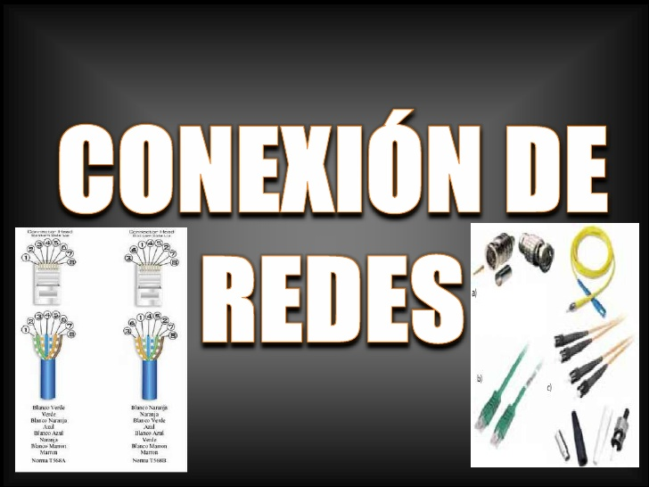
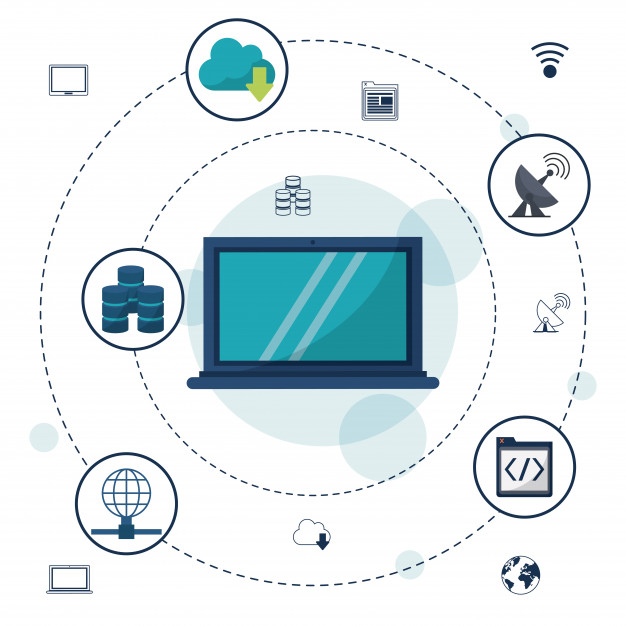
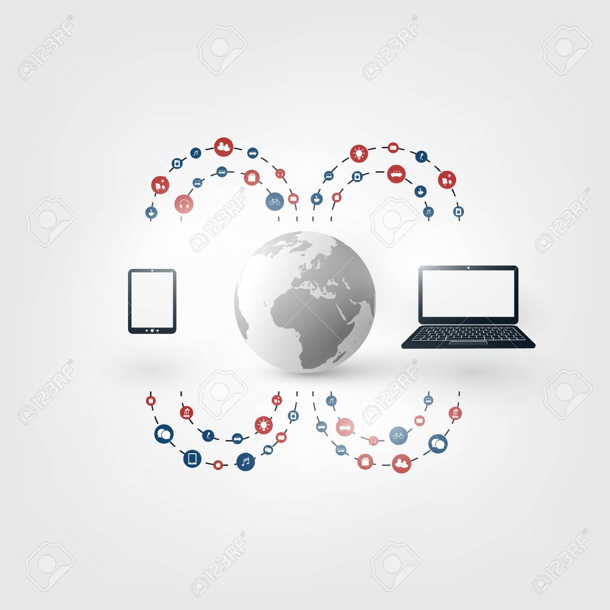
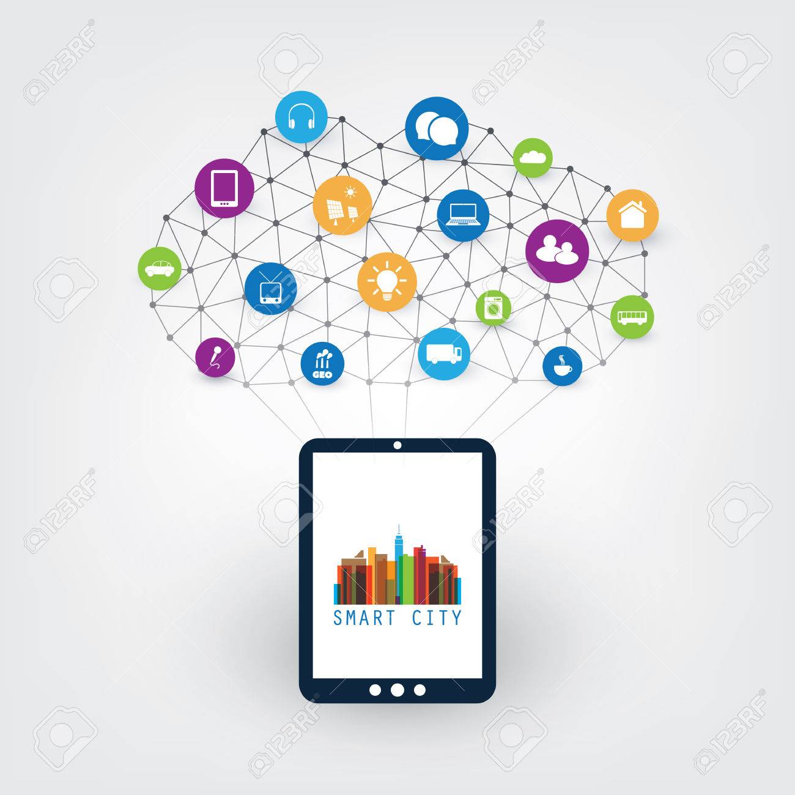
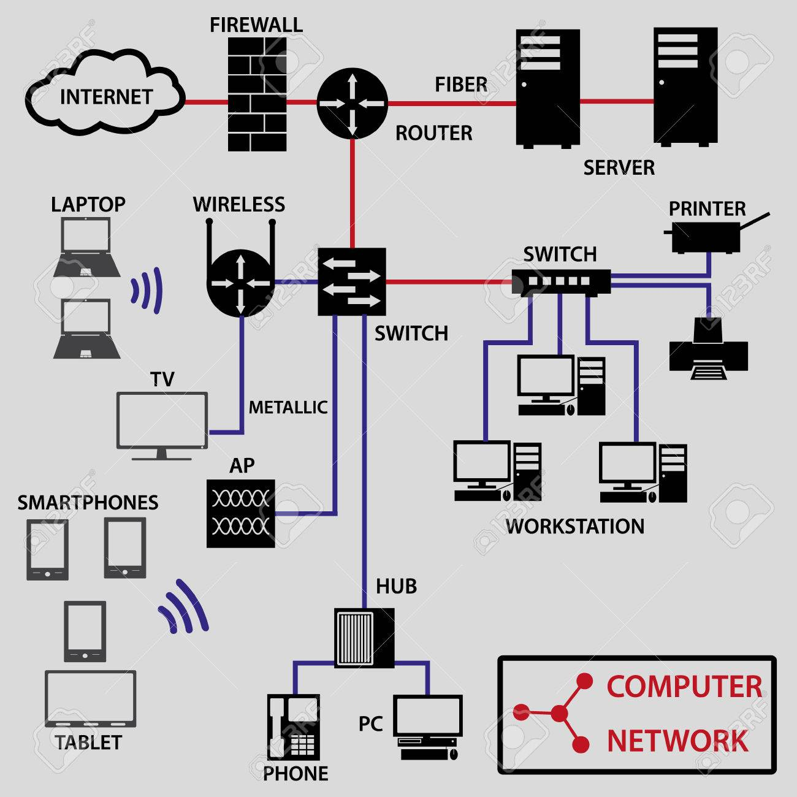
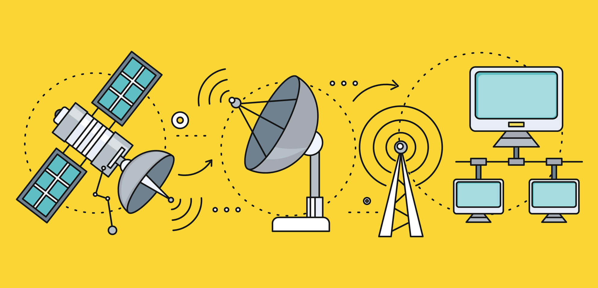
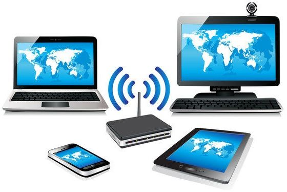

Tipos de conexiones a Internet. ¿Cuál te conviene más?

Topologias
ADSL, RDSI, cable, satélite… Seguro que muchos no sabéis qué tipo de conexión a internet tenéis
en casa, o en qué consiste cada una de ellas para poder elegir la mejor para vosotros.
Éste post sobre los tipos de conexión a internet es extenso, pero interesante. En Econectia nos
encontramos muchos clientes que tienen estas dudas por lo que esperamos que este post os ayude y
que no os “suene a chino” cuando os ofrezcan la conexión ADSL “más rápida del mercado” o la
línea convencional “que resuelve todos nuestros problemas”.
1.Red Telefónica Conmutada (RTC)

Topologias
Aunque hoy es una red que está totalmente obsoleta, hasta hace pocos años aprovechar la
instalación telefónica básica (o Red Telefónica Básica, RTB) era el sistema más extendido para
conectar un equipo doméstico o de oficina a Internet. Como la conexión RTB transmitía las
señales de forma analógica, era necesario un sistema para demodular las señales recibidas por el
ordenador y estas tareas corrían a cargo de un módem que actuaba como dispositivo de enlace
entre el ordenador y la red.
2. Red digital RDSI

Topologias
Otra de las redes extendidas hasta hace unos años y que incluso desplazó al sistema de conexión
RTB pero que actualmente se encuentra totalmente en desuso, fue la red digital RDSI. Se trataba
de una línea telefónica, pero digital (en vez de analógica). En vez de un módem, este tipo de
conexión emplea un adaptador de red.
3. Red digital ADSL

Topologias
La ADSL (Asymmetric Digital Subscriber Line) conjuga las ventajas de la
conexión RTB y de la RDSI, por lo que se convirtió pronto en el tipo de conexión a internet
favorito de hogares y empresas.
4. Conexión por cable

Topologias
La conexión por cable utiliza un cable de fibra óptica para la transmisión
de datos entre nodos. La conexión a Internet mediante este sistema puede realizarse mediante dos
vertientes: por un lado podemos utilizar lo que se conoce como fibra óptica pura que es la fibra
que llega hasta la vivienda; y por otro lado mediante la Fibra + Coaxial, la que se realiza
mediante una troncal de fibra, pero Internet llega a la vivienda mediante un empalme con cable
coaxial. Este segundo método tiene la desventaja de irse deteriorando con el tiempo, aunque como
ventaja cabe destacar que es más barato que el primero.
5. Conexión vía satélite

Topologias
El acceso a internet vía satélite es una manera para quienes no tienen
acceso a conexiones de banda ancha terrestres como cable o ADSL o donde las líneas telefónicas
no están disponibles. Ésta sería una de sus mayores ventajas. Este tipo de conexión por satélite
sigue siendo utilizada en aquellos casos en los que no hay más opciones, por ejemplo en barcos,
aviones o en zonas muy aisladas dónde no llega otro tipo de red o conexión a Interne
6. Redes inalámbricas

Topologias
Las redes inalámbricas o wireless son las que utiliza Econectia en las
conexiones a Internet que ofrecemos a nuestros clientes. Difieren de todas las vistas
anteriormente en que se utilizan señales luminosas infrarrojas u ondas de radio, en lugar de
cables, para transmitir la información.
Existe un estándar inalámbrico, WiMAX, que en Econectia ocnocemos muy bien. Su alcance llega a
los 50 Km, con velocidades de transmisión superiores a los 70 Mbps.
Éste tipo de redes son rápidas, más económicas, adecuadas en zonas de difícil cobertura y no
dependen de cableado de otras compañías.